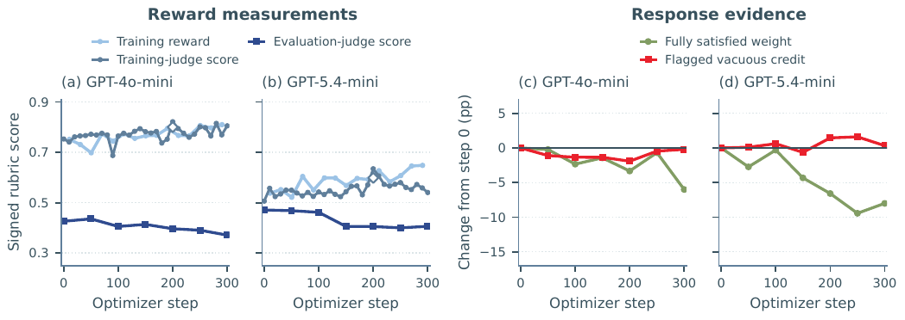
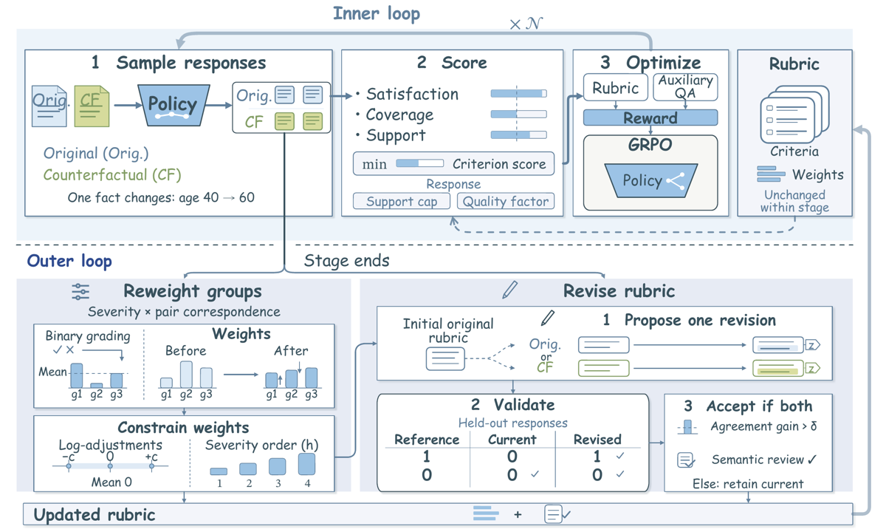
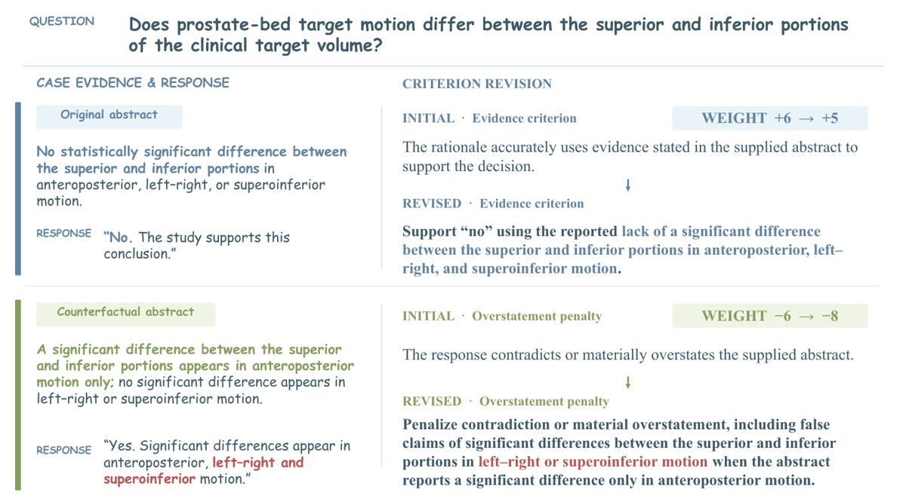

Diagnostic solide d'un mode d'échec de juge-rubrique (Vacuous Credit : le juge crédite un critère alors que le contenu requis est entièrement absent de la réponse), puis méthode qui entraîne la rubrique en alternance avec la politique qu'elle note, le signal de révision venant des erreurs de cette même politique et la validation venant d'un « reference panel » qui est le juge d'entraînement lui-même [App. A.2.3].
Claim principal, précisément : sur 1 000 rollouts jugés corrects, supprimer tout le contenu requis par le critère cible laisse 82,0 % (GPT-4o-mini) et 69,8 % (GPT-5.4-mini) des crédits en place, contre 93,1 % / 95,0 % pour le contrôle (suppression de phrases génériques) [Tab. 1] ; et l'alternance GRPO ↔ adaptation de rubrique bat GRPO à juge statique sur 21/21 comparaisons famille × métrique, avec +6,00 / +6,80 / +20,40 pt d'accuracy PubMedQA [Tab. 2].
⚠️ Mon évaluation : les deux moitiés du papier n'ont pas la même force. Le §3 (diagnostic) est le meilleur contenu du corpus sur l'échec d'omission d'un juge-rubrique, et il est transposable tel quel. Le §4-5 (méthode) est une boucle fermée dont le gain n'est pas attribué et dont l'artefact produit — la rubrique apprise — est, pris seul, moins bon que la rubrique statique de départ : 9,04 contre 10,56 pour GRPO statique sur HealthBench-Hard [Tab. 4 vs Tab. 2]. Les auteurs lisent ce résultat comme « la séquence de mises à jour est elle-même précieuse » ; la lecture concurrente — co-adaptation politique↔rubrique sans valeur transférable — n'est pas écartée.
Ce n'est pas un environnement agentique : single-turn, pas d'outils, pas d'exécution, pas de reset. Le « harness » est une chaîne de notation.
Q pénalise explicitement le padding, ce qui plafonne de fait la longueur.https://api.openai.com/v1 (endpoint figé en dur dans le code). Stack : verl 0.8.0.dev, PyTorch 2.8.0/CUDA 12.8, vLLM 0.11.0, Transformers 4.57.6, FlashAttention 2.8.3.P_x et donc le signe de l'advantage.LLM-as-judge de bout en bout, aucun vérifieur exact — sauf, de biais, PubMedQA dont le label est inséré dans un critère. Crédit partiel, au critère, pondéré par sévérité.
Rubrique statique (baselines) [Éq. 1] : juge binaire m_k ∈ {0,1}, valeur de référence b_k ∈ {0,1} par critère (orientation : b_k = fulfillment quand la condition évaluée est absente), B_x = Σ w_k b_k, P_x = Σ w_k(1-b_k) > 0, reward R = (Σ w_k m_k − B_x)/P_x, qui vaut 1 quand tout est rempli.
MetaRubric remplace m_k par une conjonction faible à trois assesseurs [Éq. 4] :
ρ_k = min( u_k^sat , u_k^cov , u_k^sup )
sat : l'exigence est-elle correctement remplie ;cov : l'information ou l'action requise est-elle présente — « Missing required content receives zero coverage » [Fig. 12] ;sup : ce fulfillment est-il étayé par la réponse et l'évidence autorisée par la tâche.Les trois scores sont dans [0,1], ramenés sur l'échelle de fulfillment par u_k^d = b_k + (1−2b_k) a_k^d [Éq. 9], ce qui permet au min de traiter les critères positifs et les pénalités dans le même sens.
Règle d'agrégation complète [Éq. 5] :
R^rub = min( clip_[0,1]( (Σ w_k ρ_k − B_x)/P_x ) , U^sup ) · (1+Q)/2
R = λ_rub · R^rub + λ_QA · R^QA avec (λ_rub, λ_QA) = (1,0 , 0,3)
min sur 3 assesseurs) ;U^sup : un min global qui empêche de monter en créditant des critères tout en racontant n'importe quoi ailleurs ;Q = min(relevance, coherence, concision), borné à (1+Q)/2 ∈ [0,5 ; 1] — donc pas une clause d'échec, au plus un facteur 2.Q).Reward auxiliaire QA [Éq. 6] : R^QA = Σ_q r_q·1[a_q(y) = a_q*] / Σ_q r_q, le reader Qwen3-1.7B ne voyant que la réponse et devant « ne pas combler les manques par ses connaissances ». C'est le seul terme de reward indépendant du juge — et la seule brique du dispositif que la boucle externe ne peut pas toucher.
Poids [Éq. 7] : 4 classes de sévérité (nice-to-have, should-have, must-have, contraindication), ancres (ω_1..ω_4) = (4,5,6,8), et w_k = ω_h·exp(τ_g) avec τ_g partagé par groupe g = (sévérité h, label de correspondance z).
| Juge de reward | Contenu requis supprimé | Phrases génériques supprimées (contrôle) |
|---|---|---|
| GPT-4o-mini | 82,0 % | 93,1 % |
| GPT-5.4-mini | 69,8 % | 95,0 % |
Le contrôle est bien posé : il garantit que la baisse n'est pas un artefact du fait d'avoir édité la réponse. Le delta (82,0 vs 93,1 ; 69,8 vs 95,0) montre que le juge réagit un peu à la délétion, mais que la majorité des crédits survivent à la disparition de leur objet.
- Faux négatifs : jamais mesurés, ni pour le juge statique ni pour le juge evidence-aware. Dénominateurs distincts : non.
- ⚠️ Le trou central : le test de délétion n'est jamais rejoué sur le juge evidence-aware de MetaRubric, ni sur les rubriques révisées. Le papier diagnostique une pathologie par une mesure directe, propose un remède, puis ne mesure jamais le remède sur l'axe du diagnostic — il ne le mesure que sur les scores de benchmark [Fig. 4]. On ignore donc si min(sat,cov,sup) fait tomber la rétention de 69,8 % à 20 % ou à 60 %. C'est une mesure à ~1 000 appels de juge qu'il était trivial de refaire.
- Suivi temporel de la fiabilité : [Fig. 2(c,d)] trace, par pas de 50 optimizer steps jusqu'à 300, la variation depuis le step 0 du poids de critères pleinement satisfaits et du Vacuous Credit flaggé par un auditeur fort — mais uniquement pour les runs à juge statique (le diagnostic). Aucune courbe équivalente pour MetaRubric. Dans une méthode qui entraîne le vérifieur, l'absence de faux positifs par checkpoint est le trou le plus coûteux : c'est précisément pendant les révisions successives qu'un drift de fiabilité se produirait.
- Plafond de bruit : absent. Le panel de trois juges forts (GPT-5.5, Gemini 3.5 Flash, DeepSeek-V4-Pro, critère satisfait seulement sous unanimité) [§3.1] est un choix conservateur intelligent, mais le taux d'accord entre ces trois juges n'est jamais reporté. Sans ce nombre, on ne sait pas si la baisse de ~5 pt du score du panel [Fig. 2(a,b)] excède le bruit. Aucun accord inter-annotateurs humain, aucune annotation humaine.
- Accord juge↔humain : jamais mesuré. Le mot human n'apparaît pas dans le papier au sens d'annotateur (grep).
Modèles — et c'est le fait décisif de ce mémo [App. A.2.3] :
« The inner judge and outer grading, proposal, semantic-review, and reference-panel roles use GPT-5.4-mini; outer roles use separate calls with temperature zero. »
Donc : juge de reward = juge de notation de la boucle externe = proposeur de révision = relecteur sémantique = panel de référence qui valide les révisions = un seul et même modèle, GPT-5.4-mini. Juge de test = GPT-5.5, même famille, même fournisseur. Et GPT-5.4-mini est exactement le juge que [Tab. 1] mesure à 69,8 % de rétention après suppression du contenu requis.
Prompts recopiés intégralement en [App. A.3] (Fig. 6 à 17), ce qui est très au-dessus de la moyenne du corpus. Les garde-fous de prompt les plus notables : - juge evidence-aware [Fig. 12] : « Topical overlap, confidence, and an intention to act do not establish fulfillment. Missing required content receives zero coverage. A stated but incorrect value may provide coverage while failing satisfaction and support. » — c'est la définition opérationnelle de l'anti-Vacuous-Credit, et elle est dans le prompt, pas dans le code ; - panel de référence [Fig. 15] : juge contre les critères ancrés originaux, « Judge before seeing the proposed revision, without access to the training reward or the proposal's validation score », « Do not transplant facts from the original case into a different held-out case » ; - proposeur [Fig. 16] : « Use the policy response to identify unclear wording, not to redefine the target », « Clarify what the response must provide without adding a requirement or weakening an unmet one », interdiction de toucher aux poids, interdiction de toucher aux questions auxiliaires ; - relecteur sémantique [Fig. 17] : « Reject wording that weakens an unmet requirement, rewards generic language instead of required content, or introduces a new target », « Judge semantic validity independently of agreement gains ».
⚠️ Ces quatre garde-fous sont les bons, et ils sont tous déclaratifs. Aucun n'est vérifié mécaniquement, et aucun n'a de taux de rejet mesuré : on ne sait pas combien de propositions sont refusées par le gate d'accord (δ = 0,02 sur 20 paires), combien par la relecture sémantique, ni combien de révisions acceptées ont malgré tout affaibli un critère. [Tab. 3] donne seulement les révisions acceptées (45,2 % des critères HealthBench, 29,8 % PubMedQA, 60,6 % MMOral-RL), pas le dénominateur des propositions.
Partiellement, et c'est à mettre au crédit du papier : le test de délétion [§3.2] est une attaque — mutation ciblée d'une réponse pour retirer l'objet du crédit, avec un contrôle apparié. C'est la bonne forme d'attaque, et le corpus en contient peu. Mais : - elle n'est menée que sur le vérifieur de la baseline, jamais sur celui qui est proposé ; - aucune politique n'est entraînée contre le vérifieur evidence-aware pour voir s'il cède (pas de run long, pas de recherche de solution dégénérée) ; - aucune attaque sur la boucle externe elle-même : rien ne teste si une politique peut induire des révisions de rubrique qui lui sont favorables, ce qui est pourtant le risque spécifique introduit par la méthode.
Le livrable seul (single-turn, pas de trajectoire). Mais le proposeur de révision voit une réponse de politique du stage courant [Fig. 16] : c'est bien un canal d'information de la politique vers le reward, et c'est volontaire.
A_j = (R_j − R̄)/(std(R) + ε) — normalisation par l'écart-type, c'est-à-dire le GRPO original, pas Dr. GRPO.G réponses à l'original et G au contrefactuel, et les 2G forment un seul groupe GRPO, chaque réponse notée par la rubrique de son prompt [App. A.2.3]. Conséquence non discutée par les auteurs : l'advantage compare des réponses à deux prompts différents, donc une partie de la variance intra-groupe est de la variance de prompt, pas de politique. ⚠️ C'est un choix fort qui mérite sa propre ablation (elle n'existe pas : « all variants retain paired sampling »).
2. Le launcher désactive le shuffle au niveau ligne pour garder les paires adjacentes dans le batch [App. A.2.3] — détail d'infra qui, s'il saute, casse silencieusement l'appariement.
3. La rubrique Φ_t change aux frontières de stage [Éq. 2] : θ_{t+1} = U_GRPO(θ_t; Φ_t) puis Φ_{t+1} = A(Φ_t; B_t, V_t). Donc le reward n'est pas stationnaire entre stages.G = 8 (⇒ 144 réponses par update, 16 par groupe apparié), température 0,7 / top-p 0,8 / top-k 20, prompt 2 048 / réponse 1 024, budgets tokens par GPU 8 192 actor / 16 384 logprob / 16 384 rollout, ε = 1e-6, epoch cap 3, seed 42, checkpoint tous les 10 updates.η = 0,1, τ_g initialisés à 0, borne c = log(6/5) ≈ 0,1823 (plus petit écart log entre sévérités adjacentes), ≤ 96 réponses pour l'estimation d'erreur de groupe (une par prompt échantillonné), ≤ 1 proposition de révision par frontière, 20 paires de validation distinctes, δ = 0,02 (amélioration stricte au-dessus du seuil). Contraintes de poids : ordre de sévérité préservé, clipping |τ_g| ≤ c, centrage à moyenne nulle.N par stage ne sont jamais donnés dans le papier. La config publiée suggère N = 10 (segments run_segment.sh 10, puis outer_boundary.py, puis run_segment.sh 20, cohérent avec checkpoint interval = 10). Donc le nombre total de steps RL de MetaRubric est inconnu, et celui des baselines aussi : les deux bras ne sont comparables sur aucun axe de budget déclaré. Les courbes de diagnostic §3 vont à 300 steps ; rien ne dit que les runs de [Tab. 2] y vont.Le papier est construit autour d'un failure mode, ce qui est rare, mais il n'en traite qu'un.
| Cas | Comportement | Détection | Correction | Correction évaluée ? |
|---|---|---|---|---|
| Vacuous Credit (le leur) | le juge crédite un critère dont le contenu requis est entièrement absent ; la politique dérive vers de la réassurance générique et des qualifications défensives | (1) divergence reward d'entraînement ↑ / score du panel fort ↓ [Fig. 2a,b] ; (2) test de délétion apparié avec contrôle [Tab. 1] | ρ_k = min(sat,cov,sup) + cap de support global + facteur qualité + reward QA auxiliaire |
⚠️ Non, pas sur l'axe du diagnostic. Seulement via les scores de benchmark [Fig. 4 : −1,22 et −2,59 pt sans evidence checks]. Rétention après délétion jamais remesurée. |
| Criterion underspecification | critère formulé « considers the patient's location » au lieu de « asks for the patient's location » : aucun poids ne corrige ça | inspection manuelle d'un cas [Fig. 1a, Fig. 5] | révision ancrée sémantiquement | ⚠️ Indirectement : [Fig. 4] montre que geler les descriptions coûte 2,81 pt sur HealthBench-Hard. Mais aucune mesure de la qualité des révisions produites. |
| Dérive de la rubrique vers ce que la politique fait déjà | les auteurs la nomment explicitement : « revising the rubric from them risks drifting toward what the policy already does » [§4.3] | — | trois garde-fous : ancre sémantique (rubrique initiale), gate d'accord δ contre le panel de référence, relecture sémantique |
⚠️ Non évaluée du tout. Aucune mesure de dérive. Et le panel de référence est le juge d'entraînement lui-même (§3 ci-dessus) : le garde-fou le plus important est circulaire. |
| Reward hacking de la politique contre le vérifieur appris | — | — | — | Non envisagé. Aucune recherche de solution dégénérée sous le nouveau reward. |
| Contrefactuels mal construits / incohérents avec l'image | — | — | garde-fous de prompt [Fig. 7] | Non évaluée : pas de taux de rejet, pas de vérification humaine. |
Limitations avouées [App. A.1], en deux lignes : seed unique (« the reported results do not quantify variation across training runs ») et scope de comparaison (code des travaux voisins non publié, d'où l'absence de comparaison en réglages appariés). ⚠️ Honnête, mais ne mentionne ni la circularité du panel, ni le résultat de [Tab. 4], ni l'absence de remesure du test de délétion.
global_support + 3 scores de qualité [Fig. 12] — donc le nombre d'appels inner est le même que pour une baseline à juge statique, mais la sortie est ~5× plus longue. À cela s'ajoutent, par frontière de stage : ≤ 96 appels de notation indépendante [Fig. 14], 1 proposition [Fig. 16], 1 relecture [Fig. 17], et le panel de référence sur 20 paires de validation [Fig. 15]. Plus, par réponse et sur toute la durée, un appel au reader Qwen3-1.7B local par question auxiliaire (4,12 q./entrée sur HealthBench-Hard).Tous les chiffres ont été recalculés depuis [Tab. 2] et [Fig. 4] (valeurs lues sur la figure PNG).
| Chiffre annoncé (abstract / intro) | Source dans le corps | Vérification | Verdict |
|---|---|---|---|
| PubMedQA +6,00 à +20,40 pt vs static-judge GRPO [abstract, §1, §5.2] | [Tab. 2] | 72,40→78,40 = +6,00 (Qwen3-4B) ; 70,00→76,80 = +6,80 (8B) ; 51,60→72,00 = +20,40 (Gemma-e2b) | confirmé (arithmétique exacte) |
| …mais « improves PubMedQA accuracy by 6.00–20.40 points » comme chiffre de tête | [Tab. 2] | vs la meilleure baseline RL : 76,60 (Dr. GRPO)→78,40 = +1,80 ; 76,60 (DAPO)→76,80 = +0,20 ; 70,80 (Dr. GRPO)→72,00 = +1,20 | sur-généralisé — vrai uniquement contre GRPO vanille. Le +20,40 est un artefact d'un GRPO de Gemma-e2b anormalement faible (51,60, soit +3,6 seulement sur le baseline non entraîné à 48,00, quand DAPO atteint 67,80). Sur 500 questions, 1 question = 0,2 pt : le +0,20 du 8B vaut une question, à seed unique. |
| HealthBench-Hard +2,46 à +3,19 pt [§1] | [Tab. 2] | 10,56→13,02 = +2,46 ; 7,15→10,34 = +3,19 ; 13,07→15,68 = +2,61 | confirmé |
| MMOral-X +1,29 à +2,13 pt [§1] | [Tab. 2] | +2,01 / +2,13 / +1,29 | confirmé |
| MMOral-OPG +3,09 à +3,82 pt [§1] | [Tab. 2] | +3,17 / +3,09 / +3,82 | confirmé |
| « improves over static-judge GRPO in all 21 model-family–metric comparisons » [§5.2] | [Tab. 2] | 3 familles × 7 métriques = 21 ; recomptées une à une, les 21 sont positives | confirmé |
| « highest score among training methods in 19 of the 21 » [§5.2] | [Tab. 2] | exactement 2 exceptions : HealthBench-Hard Acc. Qwen3-4B (Dr. GRPO 13,28 > 13,02) et MMOral-OPG Avg. Gemma-e2b (Dr. GRPO 35,42 > 35,10) | confirmé |
| Aux. Acc. +3,23 à +5,68 pt vs GRPO [§5.2] | [Tab. 2] | 9 deltas recalculés — Qwen3-4B : +3,84 / +4,71 / +3,97 ; Qwen3-8B : +3,28 / +5,68 / +4,59 ; Gemma-e2b : +3,23 / +4,88 / +3,57 | confirmé (borne basse = Gemma-e2b/HealthBench, borne haute = 8B/MMOral-X) |
| « Such awards persist after the required information is removed » [abstract] | [Tab. 1] | 82,0 % (GPT-4o-mini) et 69,8 % (GPT-5.4-mini) de rétention ; contrôle 93,1 % / 95,0 % | confirmé, mais borné : mesuré sur deux juges mini seulement, jamais sur GPT-5.5, jamais sur le juge evidence-aware |
| « …and can reverse the sign of a response's GRPO advantage » [abstract, §1, §2, §6] | §3.3 | §3.3 est un argument (« can change which responses are reinforced », « can match or exceed the reward »). Aucune fréquence, aucun comptage de groupes dont l'advantage change de signe. Le §2 annonce un « recorded-group replay » : cette expérience n'existe nulle part dans le papier (grep sur replay : 1 occurrence, dans le related work). |
introuvable — claim répété quatre fois (abstract, intro, related work, conclusion), jamais mesuré. C'est le seul vrai défaut de cohérence du papier, et il est au cœur de l'argument. |
| « Only revisions that improve agreement with held-out reference judgments and pass semantic review are accepted » [§1] | [§4.3, Tab. 6] | δ = 0,02, 20 paires de validation, approbation sémantique séparée |
confirmé sur le mécanisme — mais le « reference panel » est GPT-5.4-mini, c.-à-d. le juge d'entraînement [App. A.2.3] |
| « Freezing both descriptions and weights causes the largest drops: 3,17 et 4,40 » [§5.3] | [Fig. 4] | 13,02−9,85 = 3,17 ; 26,35−21,95 = 4,40 | confirmé |
| « Removing evidence checks reduces scores by 1,22 et 2,59 » [§5.3] | [Fig. 4] | 13,02−11,80 = 1,22 ; 26,35−23,76 = 2,59 | confirmé |
| « final-rubric retraining recovers 5,0 % et 20,7 % of MetaRubric's gains » [§5.4] | [Tab. 4] | (9,04−8,83)/(13,02−8,83) = 5,0 % ; (21,78−20,59)/(26,35−20,59) = 20,7 % | confirmé |
Verdict de cohérence : arithmétique impeccable sur onze claims numériques recalculés — c'est très au-dessus du corpus. Deux réserves : le chiffre de tête PubMedQA est sur-généralisé (vrai contre GRPO vanille, s'effondre à +0,20/+1,20/+1,80 contre la meilleure baseline) et le claim d'inversion de signe de l'advantage est introuvable.
Ablations [Fig. 4, Qwen3-4B / HealthBench-Hard Acc. · Qwen3-VL-4B / MMOral-OPG] :
| Variante | HealthBench-Hard | MMOral-OPG |
|---|---|---|
| Baseline (non entraîné) | 8,83 | 20,59 |
| w/o rubric revision | 10,21 | 24,65 |
| w/o weight adaptation | 11,73 | 24,23 |
| w/o rubric adaptation (les deux gelés) | 9,85 | 21,95 |
| w/o evidence checks | 11,80 | 23,76 |
| Full MetaRubric | 13,02 | 26,35 |
| (report de [Tab. 2]) + GRPO à juge statique | 10,56 | 23,18 |
⚠️ L'observation que le papier ne fait pas, et qui est la plus importante. La ligne « Baseline » de [Fig. 4] est le modèle non entraîné, pas GRPO. En recoupant avec [Tab. 2] : - w/o rubric adaptation = 9,85 < GRPO statique = 10,56 sur HealthBench-Hard ; - w/o rubric adaptation = 21,95 < GRPO statique = 23,18 sur MMOral-OPG.
Autrement dit : tout l'appareil evidence-aware — min(sat,cov,sup), cap de support, facteur qualité, reward QA auxiliaire, échantillonnage apparié contrefactuel — pris sans l'adaptation de rubrique, fait moins bien que GRPO à juge statique, sur les deux benchmarks. L'intégralité du gain rapporté est donc portée par la seule composante en boucle fermée, celle dont le signal vient de la politique. Les auteurs ne comparent jamais [Fig. 4] à [Tab. 2] et ne font pas cette lecture.
Rubrique finale seule [Tab. 4] : réentraîner depuis le baseline avec la rubrique finale apprise donne 9,04 (HealthBench-Hard) et 21,78 (MMOral-OPG), contre 13,02 et 26,35 pour MetaRubric. Les auteurs concluent « the sequence of rubric updates is itself part of the valuable and effective learning procedure ».
⚠️ Deux lectures concurrentes, et le papier n'écarte pas la seconde : 1. (les auteurs) la rubrique doit suivre les erreurs courantes de la politique ; une exigence pertinente tard ne l'est pas tôt. 2. (concurrente) la rubrique apprise n'est pas une meilleure rubrique. 9,04 < 9,85 (rubrique initiale gelée, même dispositif) et 9,04 < 10,56 (GRPO à juge statique). Idem sur OPG : 21,78 < 21,95 < 23,18. La rubrique apprise est, en tant qu'objet, strictement moins bonne que celle dont elle est issue, pour toute politique autre que celle qui l'a co-produite. C'est la signature attendue d'un vérifieur co-adapté : le couple (politique, rubrique) progresse, la rubrique seule n'a aucune valeur transférable.
Le papier ne départage pas. ⚠️ Une mesure l'aurait fait en une ligne : appliquer la rubrique finale au checkpoint final de MetaRubric et au checkpoint GRPO, et comparer les scores — si la rubrique finale note sa propre politique plus généreusement qu'une politique étrangère de qualité égale, la lecture 2 est établie. Cette mesure n'est pas faite.
[Tab. 3] — statistiques de révision : 45,2 % des critères HealthBench révisés au moins une fois (4 727/10 448), 29,8 % PubMedQA (879/2 949), 60,6 % MMOral-RL (5 259/8 672) ; longueur moyenne +5,5 / +3,9 / +5,6 mots (+13,5 % / +27,3 % / +33,1 %). Les auteurs y lisent une révision « sélective, pas une réécriture ». ⚠️ Lecture alternative non écartée : les critères s'allongent systématiquement, de 13 à 33 %. Comme toute variante de [Fig. 4] conserve le même nombre de critères mais pas la même longueur de texte, une partie du gain peut être un effet de longueur de prompt de juge, pas de contenu. C'est exactement ce qu'un bras placebo trancherait.
G.2G=16) et reward QA auxiliaire n'existent que du côté MetaRubric, le nombre total de steps RL et d'appels de juge n'est donné pour aucun bras, et il n'y a aucun bras placebo (rubrique de même longueur non optimisée).7aed6b23…), service juge, boucle externe, tests CPU, hyperparamètres complets [Tab. 6]. Mais : « datasets, model weights, credentials, results, and runtime logs must be supplied separately » [README], une seule config sur quatre expériences, et surtout les paires contrefactuelles et banques de QA — l'artefact central — ne sont pas publiées. On peut relire le code, pas reproduire un chiffre.evidence : 2/6 (manquant : baselines, variance, eval, repro).
Diagnostic : solide. Méthode : à répliquer, et probablement sur-créditée.

Ce qu'il faut voir : c'est la figure qui justifie le papier, et c'est elle qu'il faut reproduire avant de construire quoi que ce soit en juridique. Qwen3-8B sur HealthBench, 300 optimizer steps. (a) juge GPT-4o-mini : le training reward monte de ~0,73 à ~0,80 pendant que le score du panel d'évaluation (GPT-5.5 + Gemini 3.5 Flash + DeepSeek-V4-Pro, unanimité requise) descend de ~0,42 à ~0,37. (b) juge GPT-5.4-mini : reward 0,46 → 0,64, panel 0,47 → 0,40. Les deux juges d'entraînement donnent la même pathologie, avec des amplitudes différentes. (c,d) le poids de critères pleinement satisfaits chute de ~6 pp (4o-mini) et ~8 pp (5.4-mini) depuis le step 0, pendant que le Vacuous Credit flaggé par l'auditeur persiste — ⚠️ noter qu'en (c) il décroît légèrement : la formulation « persiste » du §3.1 est exacte, « s'aggrave » serait faux. Absent de la figure et c'est le trou : aucune courbe équivalente pour MetaRubric, donc aucune preuve que la méthode redresse la divergence qu'elle diagnostique.

Ce qu'il faut voir : la topologie de la boucle, à lire en se demandant d'où vient chaque flèche. Boucle interne (gauche) : N updates GRPO avec rubrique gelée Φ_t, prompts originaux et contrefactuels (ex. l'âge passe de 40 à 60) dans un même groupe de 2G=16 réponses, scoring evidence-aware + reader QA. Boucle externe (droite), aux frontières de stage : Reweight groups puis Revise rubric, et les deux sont alimentés par B_t, les réponses de la politique du stage — c'est la fermeture de la boucle. Le seul contre-poids visible est le gate de validation sur V_t ; ce que le schéma ne montre pas, et qu'il faut aller chercher en [App. A.2.3], c'est que le juge du gate et le juge du reward sont le même modèle.

Ce qu'il faut voir : la seule trace concrète de ce que fait une révision, et elle est instructive pour le juridique. Chaque ligne aligne un finding de l'abstract, la réponse de la politique, et le critère avant/après révision. La révision rend explicite quelle absence de différence de mouvement l'évidence établit, et la pénalité nomme les claims non étayées (gauche-droite, supéro-inférieur). Le poids du groupe « usage de l'évidence » passe de +6 à +5 et la pénalité de surinterprétation de −6 à −8. Deux leçons : (1) les critères utiles ici sont des pénalités de surinterprétation, pas des exigences de contenu — c'est la forme qui transpose le mieux au droit ; (2) c'est un cas illustratif choisi par les auteurs (« For an illustrative stage »), pas un échantillon, et rien dans le papier ne caractérise la distribution des révisions au-delà des comptages de [Tab. 3].
| Ingrédient | Choix du papier | Équivalent juridique | Transfert | Ce qui manque |
|---|---|---|---|---|
| Source des tâches | 3 jeux existants ; rubriques initiales soit écrites par médecins (HealthBench), soit générées par LLM (PubMedQA template à 6 critères, MMOral via RubricHub) [App. A.2.1] | mémos Harvey LAB, questions Vals Legal Research Bench, dossiers internes ; rubrique initiale rédigée par un avocat senior par type de livrable | adaptable | aucune mesure de qualité des rubriques générées par LLM vs écrites par l'expert — or en droit c'est la question centrale, et le papier a les deux provenances côte à côte sans jamais les comparer |
| Paires contrefactuelles (1 fait changé, ancre sémantique, labels INVARIANT/TARGET_CHANGE/WEIGHT_CHANGE/DROPPED/ADDED) [§4.1, Fig. 7-8] | un fait change → la référence et les seuls critères fact-dependent changent ; l'original reste l'ancre | « même espèce, mais le contrat est régi par le droit NY et non le droit anglais » ; « même faits, mais la prescription est acquise » ; « même clause, mais la partie est un consommateur » | adaptable, et c'est le meilleur ingrédient du papier | en droit, changer un fait change le droit applicable, pas seulement la réponse attendue : le label DROPPED/ADDED doit porter sur des moyens de droit, et la construction exige un juriste, pas un générateur. Coût non chiffré par le papier |
| Vérifieur | LLM-as-judge, 3 scores/critère min(sat,cov,sup) + cap de support global + facteur qualité ; prompts entièrement recopiés [Fig. 12] |
juge sur rubrique par livrable + vérification de citations hors juge | direct pour la décomposition coverage/support ; non pour le reste |
FP/FN jamais séparés, FN jamais mesurés, aucun accord juge↔humain, aucun plafond de bruit. Et en droit le support doit être un vérifieur exact de citation (la source existe, elle dit ce qui est allégué, elle est en vigueur à la date), pas un score de juge |
| Oracle externe du reward | reward QA auxiliaire : reader Qwen3-1.7B répond à des QCM en ne voyant que la réponse, banque gelée avant l'entraînement [§4.1, App. A.2.2] | QCM dérivés du mémo de référence : « quel délai la réponse indique-t-elle ? », « quelle juridiction ? », « quelle exception est soulevée ? » | direct — à copier en premier | c'est la seule brique du dispositif hors d'atteinte de la boucle fermée, et le papier la sous-exploite (λ_QA = 0,3 seulement). En juridique elle devrait porter plus de poids que la rubrique |
| Harness / outils | single-turn, 2 048+1 024 tokens, pas d'outils, pas de recherche | multi-turn avec recherche de jurisprudence, citation checking, vérification d'entrée en vigueur | non | tout. Le papier ne dit rien sur la détection d'omission dans une réponse longue, ni sur un juge qui verrait la trajectoire |
| Algo | GRPO, KL désactivée, entropie 0, advantage normalisé par std, groupe apparié original+contrefactuel (2G=16) [Tab. 6, Éq. 10] | GRPO/GSPO sur paires appariées | adaptable ; le groupe apparié est l'idée à tester | l'appariement mélange deux prompts dans un même groupe : une partie de la variance intra-groupe est de la variance de prompt. Jamais ablaté (toutes les variantes le conservent) |
| Curriculum | aucun curriculum de tâches ; curriculum du reward : τ_g ← τ_g + η(L_g − L̄), poids déplacé vers les groupes de critères ratés, avec ordre de sévérité, clipping |τ_g| ≤ log(6/5) et centrage [Éq. 7-8] |
déplacer le poids vers les familles de moyens que l'agent rate (prescription, compétence, conflits de lois) | adaptable, et les trois contraintes (ordre, clipping, centrage) sont bien pensées | le bornage à log(6/5) est dérivé des ancres (4,5,6,8) ; en droit la hiérarchie n'est pas un escalier régulier (une contre-indication déontologique n'est pas « un cran au-dessus » d'un must-have) |
| Anti-hacking | test de délétion apparié avec contrôle générique, sur 1 000 rollouts jugés corrects [§3.2, Tab. 1] | le test à exécuter en premier sur notre juge, sur des mémos juridiques | direct | il n'est pas rejoué sur le vérifieur corrigé, ni sur la rubrique apprise, ni par checkpoint pendant le RL. C'est la mesure qui manque partout, et ici elle manque dans le papier qui l'a inventée |
| Versionnement du reward | snapshots de rubrique immuables, reward records liés au snapshot, reprise par segment [App. A.2.3] | obligatoire dès que la rubrique bouge | direct | rien ne manque — à copier tel quel |
C'est la question posée, et le papier est le seul du corpus à l'attaquer de front — à mi-chemin.
Ce qu'il apporte : u_k^cov est explicitement une mesure d'absence (« Missing required content receives zero coverage » [Fig. 12]), le min empêche sat de compenser une couverture nulle, et le test de délétion mesure directement si le juge sait distinguer « présent » de « absent ». La révision de critère attaque la bonne cible : « considers the patient's location » → « asks for the patient's location » [§4.3], c'est-à-dire la transformation d'un critère satisfiable par évocation en un critère satisfiable seulement par acte.
Pourquoi ça ne suffit pas en droit :
1. Un critère de couverture reste indexé sur une liste de critères. cov répond « la réponse contient-elle X ? » pour les X que la rubrique énumère. Une exception non soulevée qui n'est dans aucun critère n'est pas un faux positif du juge : c'est un trou de rubrique, et la boucle externe de MetaRubric ne peut pas le combler — le proposeur a interdiction explicite d'« adding a requirement » [Fig. 16] et l'ancre sémantique est la rubrique initiale. La méthode ne peut structurellement pas découvrir une exigence manquante. En médecine ouverte c'est un coût ; en droit, où l'omission coûte plus que l'erreur, c'est rédhibitoire tel quel.
2. Le papier n'a aucune pénalité conditionnelle. Les critères négatifs qu'il manipule sont des pénalités de surinterprétation (« overstatement », claims non étayées) : elles se déclenchent sur un contenu présent. Un non-événement juridique (prescription non soulevée alors que les faits la rendent disponible) exige une pénalité déclenchée par les faits du prompt, pas par la réponse : « si les faits datent de plus de N ans et que la réponse ne discute pas la prescription, alors −k ». La structure b_k du papier, qui définit l'orientation d'un critère indépendamment de la réponse [App. A.2.3], en est à un pas — mais elle ne conditionne pas aux faits.
3. Le contrefactuel est le bon vecteur, et le papier ne s'en sert pas pour ça. Le label ADDED (« l'intervention active une exigence absente côté original ») est exactement l'objet dont on a besoin : la paire (faits sans prescription, faits avec prescription) définit le non-événement à pénaliser. Mais le papier n'exploite jamais ADDED comme un test d'omission : il s'en sert pour grouper les poids. La mesure manquante tient en une ligne : la politique soulève-t-elle l'exigence ADDED du côté contrefactuel et pas du côté original ? C'est un test de discrimination appariée, lisible par checkpoint, et sans juge si l'on passe par le QCM auxiliaire.
Le test de délétion apparié, en instrumentation permanente [§3.2, Tab. 1] — pas la méthode. Pour chaque critère crédité par notre juge sur un mémo juridique, générer deux éditions : (i) retrait de tout le contenu qui satisfait le critère, en conservant les formules génériques ; (ii) contrôle, retrait d'un volume comparable de phrases génériques en conservant le contenu requis. La rétention en (i) est le taux de faux positifs d'omission du juge ; l'écart (i)−(ii) est le vrai signal. À exécuter avant tout RL, puis à chaque checkpoint, et à ventiler par type de critère — ma prédiction est que les critères de non-événement (« soulève la prescription ») retiendront nettement plus que les critères de contenu (« cite l'article 1240 »).
Second, à coût quasi nul : le reward QA auxiliaire à banque gelée [§4.1]. C'est le seul terme que ni le juge ni la boucle d'adaptation ne peuvent déplacer, il est vérifiable par exact match, et il mesure littéralement « l'information est-elle récupérable depuis la réponse ». En juridique, c'est l'ancrage anti-dérive le moins cher qui existe.
Construire 300 paires appariées (original, contrefactuel) sur un corpus juridique, où le fait changé active ou désactive un moyen de droit (prescription acquise/non acquise ; consommateur/professionnel ; clause attributive de juridiction présente/absente), avec pour chaque paire la rubrique originale comme ancre et les labels ADDED/DROPPED validés par un juriste — puis, sans aucun RL, mesurer trois choses sur un juge candidat (Gemini, et un juge open-weights) :
ADDED plus souvent du bon côté de la paire que du mauvais ? Un juge qui crédite « soulève la prescription » aussi souvent des deux côtés ne mesure rien ;Résultat attendu : rétention nettement plus élevée sur les critères de non-événement que sur les critères de contenu (l'omission est plus facile à créditer à tort que l'erreur), et discrimination appariée faible (< 0,2 d'écart) sur les non-événements — ce qui établirait que notre juge est inutilisable comme reward sur l'axe qui compte le plus en droit, et qu'il faut un vérifieur conditionné aux faits plutôt qu'un critère de couverture.
Résultat qui falsifierait : rétention sur les non-événements équivalente ou inférieure à celle sur les critères de contenu, discrimination appariée forte (> 0,5), et accord inter-juges au niveau de l'accord inter-juristes. Dans ce cas Vacuous Credit n'est pas un problème juridique de premier ordre, le juge-rubrique est utilisable tel quel sur l'omission, et tout le budget de ce chantier doit partir sur la vérification de citations plutôt que sur l'architecture du juge. ⚠️ À noter : si l'accord inter-juristes est lui-même bas (< 0,6) sur les non-événements, l'expérience ne tranche rien et le vrai problème est en amont, dans la définition des rubriques — ce que les trois papiers de rubrique du corpus supposent tous résolu.
« Notre rubrique de reward est-elle autorisée à ajouter une exigence, et si oui, qui valide l'ajout ? »
MetaRubric interdit explicitement au proposeur d'ajouter une exigence [Fig. 16] et ancre toute révision sur la rubrique initiale — c'est la bonne décision pour éviter la dérive, et c'est précisément ce qui le rend incapable de traiter l'omission non énumérée. En droit, les deux branches sont coûteuses : une rubrique qui ne peut pas s'enrichir plafonne au jour-1 de l'expertise de l'avocat qui l'a écrite ; une rubrique qui peut s'enrichir à partir des réponses de la politique est un vérifieur co-adapté. La seule sortie est un troisième rôle : l'ajout d'exigence passe par une file de revue humaine (avocat), hors de la boucle RL, avec un SLA — ce qui transforme la question d'architecture en question de budget d'expert, et c'est cette conversation-là qu'il faut avoir avant d'écrire le premier harness. Corollaire direct du papier : ne jamais laisser le juge qui produit le reward être aussi celui qui valide un changement de rubrique — MetaRubric fait exactement cela (GPT-5.4-mini dans les deux rôles [App. A.2.3]) et c'est la faille qu'il ne voit pas.